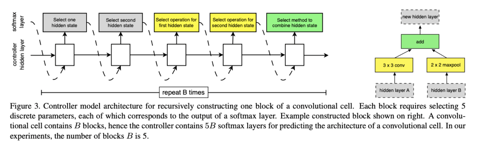

ML Selection rules
- Avoid the state-of-the-art trap:
- SOTA on research data != SOTA on your data,
- Cost,
- Latency,
- Start with the simplest models:
- Easier to deploy: deploying early allows validating pipeline,
- Easier to debug,
- Easier to improve upon,
- Simplest models != models with the least effort: BERT is easy to start with pretrained model, but not the simplest,
- Avoid human biases in selecting models:
- It’s important to evaluate models under comparable conditions (It’s tempting to run more experiments for X because you’re more excited about X),
- Near-impossible to make blanketed claims that X is always better than Y
- Evaluate good performance now vs. good performance later:
- Best model now != best model in 2 months
- Improvement potential with more data
- Ease of update
- Evaluate trade-offs:
- False positives vs. false negatives,
- Accuracy vs. compute/latency,
- Accuracy vs. interpretability,
- Understand your model’s assumptions:
- Neural networks assume that examples are independent and identically distributed
- Smoothness
- Supervised algorithms assume that there’s a set of functions that can transform inputs into outputs such that similar inputs are transformed into similar outputs
- Tractability
- Let X be the input and Z be the latent representation of X. Generative models assume that it’s tractable to compute P(Z|X).
- Boundaries
- Linear classifiers assume that decision boundaries are linear.
- Conditional independence
- Naive Bayes classifiers assume that the attribute values are independent of each other given the class.
Ensemble
Bagging
Bagging is an ensemble of predictors that uses as final prediction the average of most voted prediction:
Boosting
Boosting is a method that train predictors on the residuals (the errors) of the precedent boosted predictors:
Stacking
Stacking is making a stack of model, the output of one or various models being used as input for another or other models:
Auto-ML
Good ML researcher is someone who will automate themselves out of job.
Soft AutoML
Weaker models with well-tuned hyperparameters can outperform fancier models.
- Hyperparameter tuning
- Built-in with frameworks
- TensorFlow: Keras Turner
- Scikit-learn: auto-sklearn
- Ray Tune
- Popular algos:
- Random search
- Grid search
- Bayesian optimization
Hard AutoML
Neural architecture search
Search space:
- Set of operations: convolution, fully-connected, pooling
- How operations can be connected?

Performance estimation strategy:
- How to evaluate many candidate architectures?
- Ideal: should be done without having to re-construct or re-train them from scratch.
Search strategy
- Random,
- Reinforcement learning:
- Reward the choices that improve performance estimation,
- Evolution:
- Mutate an architecture,
- Choose the best-performing offsprings,
- So on.
Learned optimizer
- Learn how to learn on a set of tasks,
- Generalize to new tasks,
- The learned optimizer can then be used to train a better version of itself.
Learning algorithm:
- A set of functions that specifies how to update the weights.
- Also called optimizers: Adam, Momentum, SGD
Resources
See: